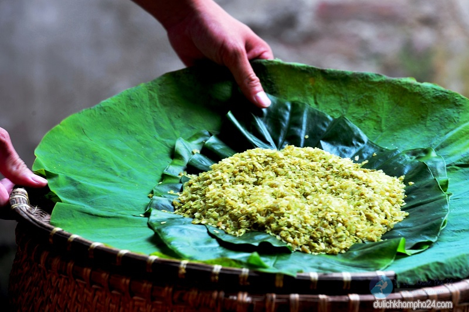

Giới thiệu về Hà Nội – Nơi ẩm thực ghi dấu ấn
Không những Huế, ẩm thực Hà Nội cũng thể hiện sự trang trọng và tinh tế. Món ăn ở đây được cho rằng không lẫn vào đâu được. Ẩm thực Hà Nội đã đi vào ca dao tục ngữ, đó là những món ăn phổ biến trong mâm cơm gia đình (canh rau muống, cà dầm tương) đến những món ăn đặc sản như chả cá Lã Vọng, cốm Làng Vòng, bánh cuốn Thanh Trì, bún chả, phở bò,…
Chả cá Lã Vọng: Chả cá Lã Vọng đã trở thành đặc sản nổi tiếng của đất Thủ đô với cách chế biến công phu, tỉ mỉ. Chả được làm từ cá lăng, lọc thịt tẩm ướp gia vị rồi đem nướng. Muốn ngon bạn phải ăn nó khi còn nóng, khi ăn sẽ kèm với bún, bánh đa nướng, rau thơm, lạc rang, hành củ và chấm với mắm tôm.

Bún chả Hà Nội: Là món ăn quen thuộc của người dân ở đây, cũng là món ăn nhận được rất nhiều lời khen từ du khách gần xa nhờ phong vị đậm chất truyền thống.

Cốm Làng Vòng: Màu xanh mát của cốm cùng mùi thơm nhẹ dịu của cốm đã tạo nên sức hút cho cốm Làng Vòng – món quà tinh túy của người dân Hà Thành. Nếu bạn có dịp ghé thăm Hà Nội hãy thưởng thức một lần nhé!
